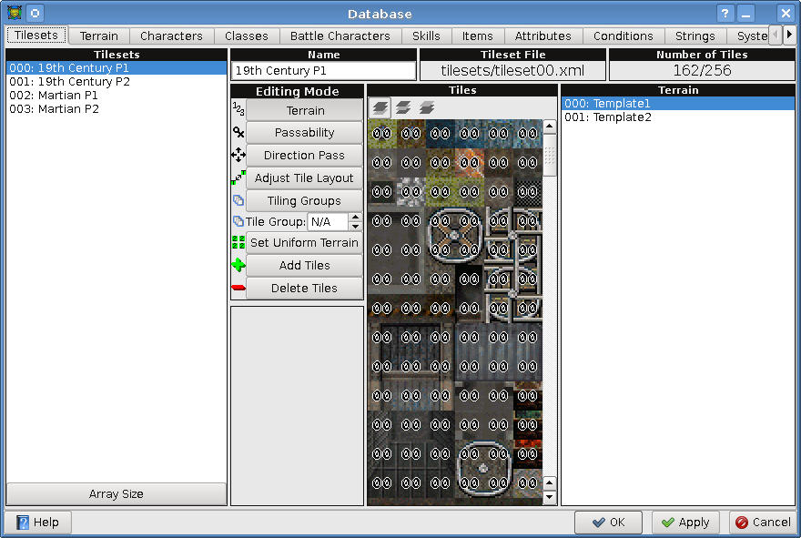

[User Interfaces]->[Database]->[Tilesets Tab]

- Tilesets:
-
This is the list of available tilesets. Clicking on one will display its properties to the right.
You can also click on the "Array Size" button to change the number of tilesets.
- Name:
- The name of the current tileset, changing this will change the current tileset's name.
- Tileset File:
- The location of the XML file for the selected tileset (relative to the project directory).
- Number of Tiles:
- The number of tiles in the current tileset over the maximum number of tiles per tileset (256).
- Editing Mode:
- Changes the functionality of the tile view to the right.
- Editing Mode -> Terrain:
-
Modifies the associated terrain for each tile. Select the terrain on the far right, then click on each tile
to change it to that terrain.
- Editing Mode -> Passability:
- Set the passability of each tileset to either passable (O), or not passable (X).
- Editing Mode -> Direction Pass:
-
Modify each direction of passability individidually for each tile. Simply click on the arrows for a tile
to turn them on (green arrow), and off (black outlined arrow).
- Editing Mode -> Adjust Layout:
-
Change the layout of the tiles. Clicking on a tile will select it (indicated with a box), then clicking
on another tile will swap it with the currently selected tile, and clear the selection.
- Editing Mode -> Tiling Groups:
-
Modify the tiling groups of each tile. Clicking on a tile will set it's tiling group to the number specified
in the box "Tiling Group". Tiles within the same tileset, that belong to the same tile group
(except N/A) will tile together in the map editor as if they were one tile. Simply choose a group number
and click on each tile to change it to that group.
- Editing Mode -> Set Uniform Terrain:
- Changes all the tiles in the tileset to the currently selected terrain.
- Editing Mode -> Add Tiles:
- Opens a dialog to add tiles from either the projects data directory, or the global data directory.
- Editing Mode -> Delete Tiles:
-
Clicking on a tile in this mode will delete it. A confirmation box will popup when you select this mode
to ask if you really want to delete tiles. Once deleted they can be recovered by clicking on the "Cancel"
button at the bottom of the window, before having clicked on the "Apply" button.
- Tiles:
-
This is where all the tiles in the current tileset are displayed. The layer buttons found in the map
editor can also be found here, and are used for some of the editing modes in which you can modify the data
for each individual layer. If the layer buttons are disabled, then the current editing mode is not specific
to each layer.
- Terrain:
- This list is used when modifying the terrain of the tiles.